方方-对象/对象分类
1 对象 object (唯一一种复杂类型)¶
作业1：请不要使用 class，写一个 Person 构造函数
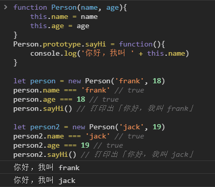
作业2：请用 class 再实现一次上面的功能
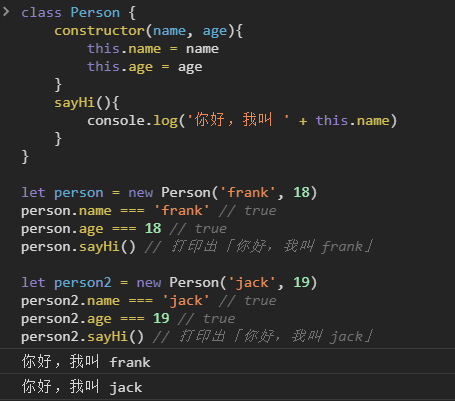
-
定义
- 无序的数据集合
- 键值对的集合
-
声明对象的两种语法
let obj = { 'name': 'frank', 'age': 18 }let obj = new Object({'name': 'frank'})// 匿名对象: 在对象外加个 ( ) console.log({ 'name': 'frank', 'age': 18 })
细节
- 键名是字符串，不是标识符，可以包含任意字符
- 引号可省略，省略之后就只能写标识符
- 就算引号省略了，键名也还是字符串（重要）
2 属性¶
-
属性名
每一个 key 都是对象的属性名（property）
读对象的属性时
- 如果使用 [ ] 语法，那么 JS 会先求 [ ] 中表达式的值。(注意区分 表达式 是 变量 还是 常量 )
- 如果使用点语法，那么点后面一定是 string 常量。
所有的属性名会自动变成字符串
例：Object.keys(obj) 可以得到 obj 的所有 key
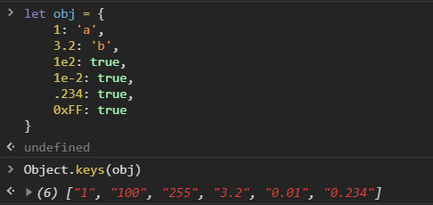
变量作属性名的情况
- 不加 [ ] 的属性名会 自动变成字符串
- 加了 [ ] 则会 当做变量求值；值如果不是字符串，则会自动变成字符串

除了字符串，symbol 也能做属性名（超纲知识）
目前没用，在学习“迭代”时会用到

-
属性值
每个 value 都是对象的属性值
3 原型¶
-
对象的隐藏属性
- JS 中每一个对象都有一个隐藏属性
- 隐藏属性 储存着 原型 的地址
- 这个 共有属性 组成的对象 叫做 原型
-
原型
-
对象的原型也是对象
这个对象里有 toString / constructor / valueOf 等属性
-
obj = {}的原型即为 所有对象的原型这个原型包含所有对象的共有属性，是 对象的根
-
原型链
-
4 增删改查 对象的属性¶
4.1 删除属性¶
-
delete obj.xxx或delete obj['xxx'] -
判断
'xxx' in obj === false不含属性名
'xxx' in obj && obj.xxx === undefined含有属性名，但是值为 undefined
注意：obj.xxx === undefined 不能断定 'xxx' 是否为 obj 的属性
4.2 查看属性（读属性）¶
-
单个属性（两种方法）
obj['key']中括号语法
obj[key] // 变量 key 的值一般不为 'key'obj.key点语法，建议先把它翻译为第一种方法再理解
-
所有属性
Object.keys(obj)查看自身所有属性
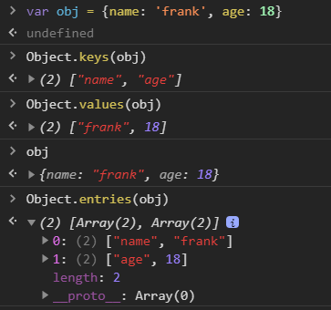
console.dir(obj)查看自身 + 共有属性
或者
用 Object.keys 打印出 obj.__proto__
判断: obj.hasOwnProperty('toString')
判断一个属性是自身的还是共有的
4.3 修改 或 增加属性（写属性）¶
-
直接赋值
obj.name = 'frank' obj['name'] = 'frank' obj['na' + 'me'] = 'frank'可以强行 修改或增加 原型 上的属性
Object.prototype.toString = 'xxx'// 不推荐用 __proto__，好像有性能问题 obj.__proto__['toString'] = 'xxx'一般来说不要修改原型，会引起很多问题
-
批量赋值
Object.assign(obj, {age: 18, gender: 'man'}) -
修改隐藏属性
推荐使用 Object.create
规范大概的意思是，要改就一开始就改，别后来再改
let obj = Object.create(common) obj.name = 'frank' let obj2 = Object.create(common) obj2.name = 'jack'不推荐使用 obj.__proto__ = common
所有 __proto__ 代码都不推荐写
5 例子：正方形 => new¶
对象需要分类吗
需要
理由
-
有很多对象拥有一样的属性和行为，需要把它们分为同一类
- 如 square1 和 square2
-
但是还有很多对象拥有其他的属性和行为，所以需要不同的分类
- 比如 Square / Circle / Rect
- 比如 Array / Function
- 而 Object 创建出来的对象，是最没有特点的对象
例子：正方形
1. for 循环
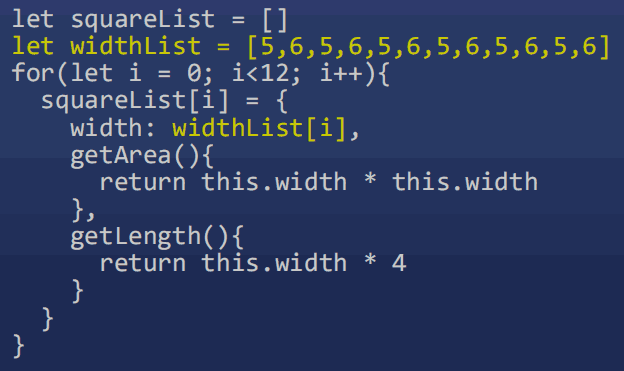
- 浪费了太多内存
- 看内存图

2. 将共用属性放到原型
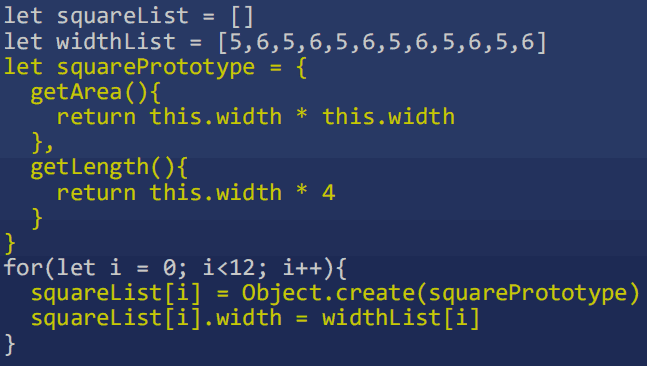
- 创建 square 的代码太分散了
3. 把代码抽离到一个函数里，然后调用函数
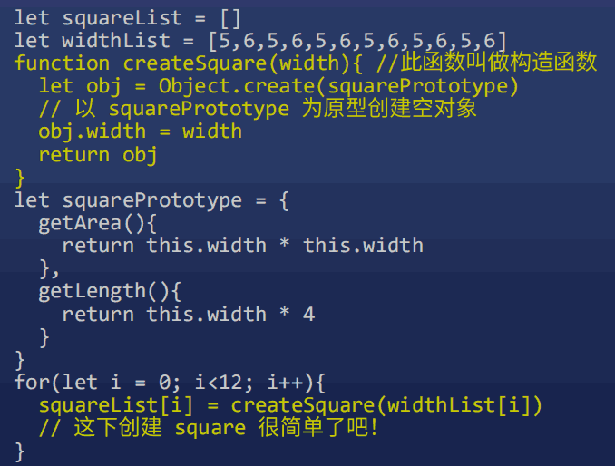
4. 原型 和 函数 结合
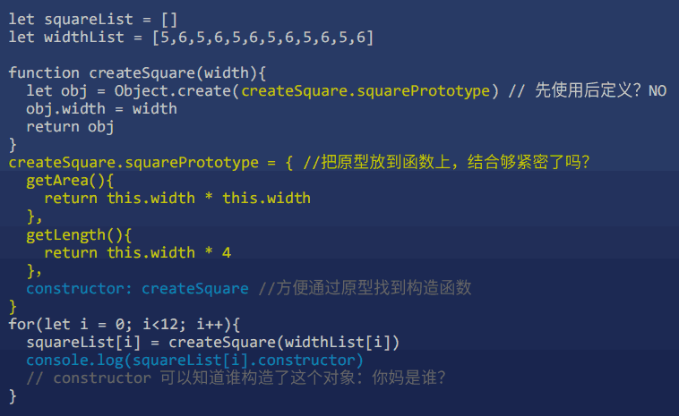
- 这段代码几乎完美
- 固定下来，让 JS 开发者直接用
5. new 操作符
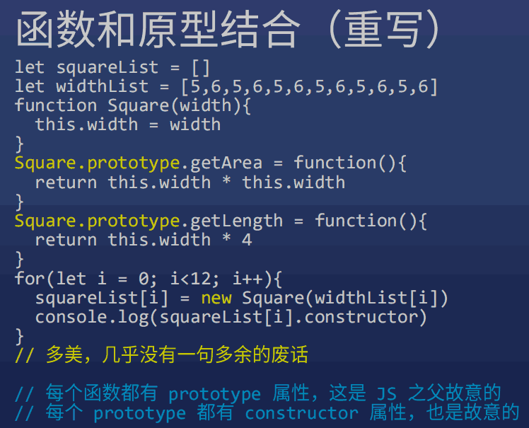
总结
-
new X() 自动做了四件事情
- 自动创建空对象
- 自动为空对象关联原型，原型地址指定为 X.prototype
- 自动将空对象作为 this 关键字运行构造函数
- 自动 return this
-
构造函数 X
- X 函数本身负责给对象本身添加属性
- X.prototype 对象负责保存对象的共用属性
6 代码规范¶
-
大小写
- 所有构造函数 (专门用于创建对象的函数) 首字母大写
- 所有被构造出来的对象，首字母小写
-
词性
-
new 后面的函数，使用名词形式
如 new Person(), new Object()
-
其他函数，一般使用动词开头
如 createSquare(5), createElement('div')
-
其他规则以后再说
-
7 如何确定一个对象的原型¶
对象.__proto__ === 其构造函数.prototype
- 原型公式 (JS 里唯一的一个公式)
- new 做的第二件事
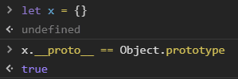
Object.prototype 是哪个函数构造出来的
没有
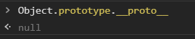
8 类型 vs 类 / 数组 / 函数¶
-
类型: JS 数据的分类，有 7 种
-
类
针对于对象的分类，有无数种
常见的有 Array, Function, Date, RegExp 等
-
数组对象
-
定义一个数组
let arr = [1,2,3] let arr = new Array(1,2,3) // 元素为 1,2,3 let arr = new Array(3) // 长度为 3
'0' / '1' / '2' / 'length'
注意，属性名只有字符串
'push' / 'pop' / 'shift' / 'unshift' / 'join'
后面单独教这些 API
-
-
函数对象
-
定义一个函数
function fn(x,y){return x+y} let fn2 = function fn(x,y){return x+y} let fn = (x,y) => x+y let fn = new Function('x','y','return x+y')
'name' / 'length'
'call' / 'apply' / 'bind'
函数的 prototype 属性
- 所有函数一出生就有一个 prototype 属性
- 所有 prototype 一出生就有一个 constructor 属性
- 所有 constructor 属性一出生就保存了对应的函数的地址
constructor 属性
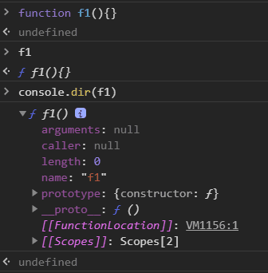
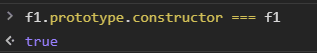
-
9 JS 终极一问¶
window 是谁构造的
Window
可以通过 constructor 属性看出构造者
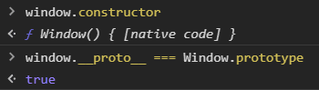
window.Object 是谁构造的
window.Function
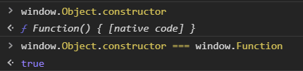
因为所有函数都是 window.Function 构造的
window.Function 是谁构造的
window.Function
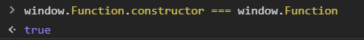
因为所有函数都是 window.Function 构造的
浏览器构造了 Function，然后指定它的构造者是自己
10 ES6 引入了新语法¶
class 统治天下
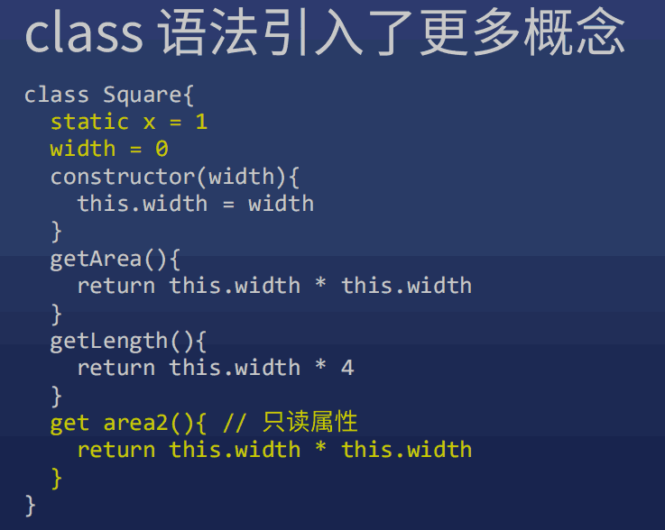
11 class 中两种函数写法的区别¶
许多同学对 class 语法的细节不太清楚，这里我总结几个容易混淆的语法，这两种写法的意思完全不一样：
不要强求完全转换成 ES5
大部分 class 语法都可以转为 ES5 语法，但并不是 100% 能转，
有些 class 语法你意思理解就行，不需要强行转换为 ES5。
语法1：
class Person{
sayHi(name){}
// 等价于
sayHi: function(name){}
// 注意，一般我们不在这个语法里使用箭头函数
}
//等价于
function Person(){}
Person.prototype.sayHi = function(name){}
语法2：(注意冒号变成了等于号)
class Person{
sayHi = (name)=>{} // 注意，一般我们不在这个语法里使用普通函数，多用箭头函数
}
// 等价于
function Person(){
this.sayHi = (name)=>{}
}